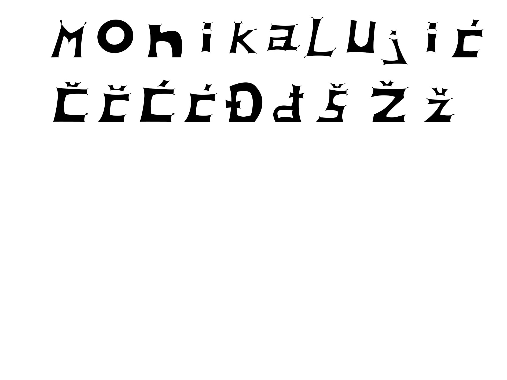

Vježbu 1 smo obrađivali u FontForgeu. Zadatak je bio napraviti svoj font za slova koja se naleze u imenu pojedinca koji obrađuje vježbu. 
Vježbu 4 smo obrađivali u Adobe Illustratoru. Imamo 2 slike, crtali smo složene objekte slova, a koristili smo linearni, radijalni i mesh gradient te transpiraciju.


Vježbu 5 smo obrađivali u Adobe Photoshopu. Koristili smo tehnike retuširanja fotografija. Naučili smo se korisititi selektiranjem (Lassso Tool), uklanjali smo nedostatke pomoću zamućivanja, kloniranja i kopiranja selekcije u layeru. Također smo koristili lokalne i globalne korekcije boja.


Vježbu 6 smo obrađivali u Adobe Photoshopu. Naučili smo tehnike digitalnog koloriranja crno bijele fotografije i selektiranja (Magnetic Lassso Tool, Quick Mask Mode). Koristili smo Adjustment Layer i Layer Mask


Vježbu 7 obrađivali smo u Adobe Photoshopu. Za tehnike selektiranja različitih tipova slike koristili smo Polygonal Lasso Tool, Magnetic Lassso Tool, Quick Mask Mode. Koristili smo selekciju pomoću kanala, izrađivali realistićnu sjenu te koristili Color Balance i Levels.

Vježbu 8 obrađivali smo u Adobe Premieru. Gifove smo pravili tako što uzmemo isjećak iz videa


Vježbu 9 smo obraživali u Adobe Premieru. Naučili smo se upotrebljavati video efekte, rezati i spajati video isječke, dodavati zvuk i tekst.